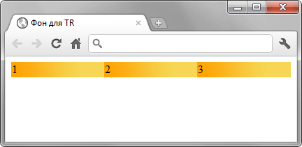
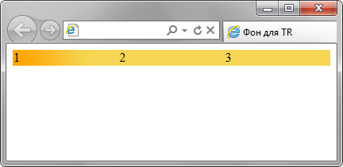

background-image
Устанавливает фоновое изображение для элемента. Если одновременно для элемента задан цвет фона, он будет показан, пока фоновая картинка не загрузится полностью. То же произойдет, если изображения не доступны или их показ в браузере отключен. В случае наличия в рисунке прозрачных областей, через них будет проглядывать фоновый цвет. Допустимо указывать несколько фоновых изображений, перечисляя их параметры через запятую.
Краткая информация
| Значение по умолчанию | none |
|---|---|
| Наследуется | Нет |
| Применяется | Ко всем элементам |
Синтаксис
background-image: url(путь к файлу) | none[, url(путь к файлу) | none]*Значения
- url
- В качестве значения используется путь к графическому файлу, который указывается внутри конструкции url(). Путь к файлу при этом можно писать как в кавычках (двойных или одинарных), так и без них.
- none
- Отменяет фоновое изображение для элемента.
Пример
<!DOCTYPE html>
<html>
<head>
<meta charset="utf-8">
<title>background-image</title>
<style>
body {
background-image: url(images/bg.jpg); /* Путь к фоновому изображению */
background-color: #c7b39b; /* Цвет фона */
}
</style>
</head>
<body>
<p>...</p>
</body>
</html>Объектная модель
Объект.style.backgroundImage
Примечание
Internet Explorer до версии 7 включительно применяет фон к внутренней части границы элемента, у которого установлено свойство hasLayout. Если у элемента нет hasLayout, свойство background-image будет учитывать границы элемента, как это и задано в спецификации. Разница в отображении будет заметна, если границы пунктирные (dashed или dotted), а не сплошные.
Если для элемента значение overflow установлено как scroll или auto, в Internet Explorer 8 будет вертикальная задержка в один пиксел при прокрутке фона.
Если фон задаётся для строки таблицы (элемент <tr>), то Chrome и Safari отображают его не так, как предписывает спецификация, а именно для каждой ячейки отдельно. В то время как браузер должен показывать цельный фон для всего ряда. В примере ниже приведён код демонстрирующий ошибку.
<!DOCTYPE html>
<html>
<head>
<meta charset="utf-8">
<title>Фон для TR</title>
<style>
table {width: 100%; border-spacing: 0; }
tr { background: #f6d654 url(images/orangebg.png) repeat-y; }
</style>
</head>
<body>
<table>
<tr>
<td>1</td><td>2</td><td>3</td>
</tr>
</table>
</body>
</html>Результат данного примера в браузере Chrome показан на рис. 1. Браузер Internet Explorer, Opera и Firefox корректно отображают фон для строки (рис. 2).

Рис. 1. Повторение фона для каждой ячейки

Рис. 2. Фон для всей строки
Спецификация
| Спецификация | Статус |
|---|---|
| CSS Backgrounds and Borders Module Level 3 | Возможная рекомендация |
| CSS Level 2 (Revision 1) | Рекомендация |
| CSS Level 1 | Рекомендация |
Браузеры
| Internet Explorer | Chrome | Opera | Safari | Firefox | |
| один фон | 4 | 1 | 3.5 | 1 | 1 |
| несколько фонов | 9 | 1 | 10.5 | 1.3 | 3.6 |
| Android | Firefox Mobile | Opera Mobile | Safari Mobile | |
| один фон | 2.1 | 1 | 10 | 3.2 |
| несколько фонов | 2.1 | 1 | 10 | 3.2 |